Основная зафиксированная серия: 480 запусков, горизонт 60. Независимая единица — seed.
Модель genetic-v2-controls, схема 2. Полные параметры и окружение: manifest (если каталоги рядом); отпечатки входных CSV и версии анализа. L=20, N=160, T=50.
| scenario | K | α | μ | q | pairing |
|---|---|---|---|---|---|
| baseline | 5 | 0.2 | 0.01 | 0.05 | local |
| rounds-1 | 1 | 0.2 | 0.01 | 0.05 | local |
| rounds-10 | 10 | 0.2 | 0.01 | 0.05 | local |
| normalized-1 | 1 | 1.0 | 0.01 | 0.05 | local |
| normalized-10 | 10 | 0.1 | 0.01 | 0.05 | local |
| game-zero | 5 | 0.0 | 0.01 | 0.05 | local |
| mutation-zero | 5 | 0.2 | 0.0 | 0.05 | local |
| mutation-high | 5 | 0.2 | 0.05 | 0.05 | local |
| resource-poor | 5 | 0.2 | 0.01 | 0.02 | local |
| resource-rich | 5 | 0.2 | 0.01 | 0.25 | local |
| global | 5 | 0.2 | 0.01 | 0.05 | global |
| global-matched | 5 | 0.2 | 0.01 | 0.05 | global_matched |
| seed | status | completed_generations | side_length | population_size | maximum_generations | scenario_id | repetition | ticks_per_generation | rounds_per_match | initial_energy_hundredths | resource_energy_hundredths | living_cost_hundredths | resource_spawn_probability | game_payoff_weight_hundredths | crossover_probability | mutation_probability | tournament_size | model_version | random_generator | java_version | extinct | extinction_generation | pairing_mode | data_schema |
|---|---|---|---|---|---|---|---|---|---|---|---|---|---|---|---|---|---|---|---|---|---|---|---|---|
| 10001 | completed | 60 | 20 | 160 | 60 | baseline | 1 | 50 | 5 | 1000 | 400 | 100 | 0.05 | 20 | 0.8 | 0.01 | 3 | genetic-v2-controls | L64X128MixRandom | 25.0.4.1+1 | false | local | 2 | |
| 10001 | completed | 60 | 20 | 160 | 60 | rounds-1 | 1 | 50 | 1 | 1000 | 400 | 100 | 0.05 | 20 | 0.8 | 0.01 | 3 | genetic-v2-controls | L64X128MixRandom | 25.0.4.1+1 | false | local | 2 | |
| 10001 | completed | 60 | 20 | 160 | 60 | rounds-10 | 1 | 50 | 10 | 1000 | 400 | 100 | 0.05 | 20 | 0.8 | 0.01 | 3 | genetic-v2-controls | L64X128MixRandom | 25.0.4.1+1 | false | local | 2 | |
| 10001 | completed | 60 | 20 | 160 | 60 | normalized-1 | 1 | 50 | 1 | 1000 | 400 | 100 | 0.05 | 100 | 0.8 | 0.01 | 3 | genetic-v2-controls | L64X128MixRandom | 25.0.4.1+1 | false | local | 2 | |
| 10001 | completed | 60 | 20 | 160 | 60 | normalized-10 | 1 | 50 | 10 | 1000 | 400 | 100 | 0.05 | 10 | 0.8 | 0.01 | 3 | genetic-v2-controls | L64X128MixRandom | 25.0.4.1+1 | false | local | 2 | |
| 10001 | completed | 60 | 20 | 160 | 60 | game-zero | 1 | 50 | 5 | 1000 | 400 | 100 | 0.05 | 0 | 0.8 | 0.01 | 3 | genetic-v2-controls | L64X128MixRandom | 25.0.4.1+1 | false | local | 2 | |
| 10001 | completed | 60 | 20 | 160 | 60 | mutation-zero | 1 | 50 | 5 | 1000 | 400 | 100 | 0.05 | 20 | 0.8 | 0.0 | 3 | genetic-v2-controls | L64X128MixRandom | 25.0.4.1+1 | false | local | 2 | |
| 10001 | completed | 60 | 20 | 160 | 60 | mutation-high | 1 | 50 | 5 | 1000 | 400 | 100 | 0.05 | 20 | 0.8 | 0.05 | 3 | genetic-v2-controls | L64X128MixRandom | 25.0.4.1+1 | false | local | 2 | |
| 10001 | completed | 60 | 20 | 160 | 60 | resource-poor | 1 | 50 | 5 | 1000 | 400 | 100 | 0.02 | 20 | 0.8 | 0.01 | 3 | genetic-v2-controls | L64X128MixRandom | 25.0.4.1+1 | false | local | 2 | |
| 10001 | completed | 60 | 20 | 160 | 60 | resource-rich | 1 | 50 | 5 | 1000 | 400 | 100 | 0.25 | 20 | 0.8 | 0.01 | 3 | genetic-v2-controls | L64X128MixRandom | 25.0.4.1+1 | false | local | 2 | |
| 10001 | completed | 60 | 20 | 160 | 60 | global | 1 | 50 | 5 | 1000 | 400 | 100 | 0.05 | 20 | 0.8 | 0.01 | 3 | genetic-v2-controls | L64X128MixRandom | 25.0.4.1+1 | false | global | 2 | |
| 10001 | completed | 60 | 20 | 160 | 60 | global-matched | 1 | 50 | 5 | 1000 | 400 | 100 | 0.05 | 20 | 0.8 | 0.01 | 3 | genetic-v2-controls | L64X128MixRandom | 25.0.4.1+1 | false | global_matched | 2 |
В каждой группе seed 10001–10040; все повторы: исходный runs.csv.
| Сценарий | C, 95% CI | CCD??, 95% CI | n |
|---|---|---|---|
| Базовый | 0.487 [0.343; 0.631] | 0.434 [0.306; 0.563] | 40 |
| K=1, α=0.20 | 0.011 [0.008; 0.016] | 0.001 [0.000; 0.003] | 40 |
| K=10, α=0.20 | 0.743 [0.614; 0.858] | 0.668 [0.550; 0.775] | 40 |
| K=1, α=1.00 | 0.004 [0.003; 0.005] | 0.000 [0.000; 0.000] | 40 |
| K=10, α=0.10 | 0.797 [0.680; 0.899] | 0.711 [0.602; 0.808] | 40 |
| Без игрового дохода | 0.479 [0.407; 0.549] | 0.129 [0.068; 0.197] | 40 |
| Мутация 0 | 0.050 [0.000; 0.125] | 0.047 [0.000; 0.119] | 40 |
| Мутация 0.05 | 0.293 [0.215; 0.379] | 0.248 [0.176; 0.327] | 40 |
| Ресурсы q=0.02 | 0.449 [0.306; 0.592] | 0.408 [0.277; 0.541] | 40 |
| Ресурсы q=0.25 | 0.403 [0.269; 0.543] | 0.342 [0.224; 0.467] | 40 |
| Глобальные | 0.372 [0.231; 0.517] | 0.329 [0.204; 0.461] | 40 |
| Глобальные с бюджетом | 0.285 [0.162; 0.414] | 0.240 [0.131; 0.354] | 40 |
Средние запусков, percentile bootstrap 20000 повторов, 95% CI. Узкая категория CCD??: первый C, C после CC, D после CD. Она отличается от доли действий C.
Оценки · Парные эффекты и Bonferroni · Все seed · Динамика и эффективное n · Вымирание · Все 32 стратегии · 1024 стандартные встречи · Поведенческая эквивалентность
Ключевой результат — сильная зависимость от повторяемости при фиксированной памяти одного раунда. В нормированном ряду при K=1 C=0.004, при K=5 C=0.487, при K=10 C=0.797. Конечные популяции часто разделяются на почти полностью сотрудничающие и почти полностью отказывающиеся; среднее не описывает типичную отдельную популяцию.
Без игрового дохода C=0.479 близка к baseline, но доля CCD?? лишь 0.129 против 0.434 и выживаемость 0.240 против 0.995. Поведенческая C сама по себе не доказывает отбора условной взаимности.
При нулевой мутации C=0.050: 38 из 40 запусков теряют аллель первого C. Это разведочная проверка механизма по уже сохранённым данным, не новая подтверждающая гипотеза. При мутации .05 средняя C ниже baseline, но одновременный интервал эффекта включает ноль. Утверждение «чем меньше мутация, тем лучше» данными отвергается.
Результаты local/global неточны: для global-matched разность C −0.202, описательный 95% CI [−0.407; 0.006], одновременный интервал ещё шире. Ресурсные режимы меняют энергетику, но направление влияния на C надёжно не установлено. Нет доказательства эквивалентности.
Ни одного вымирания за 40 запусков на сценарий; Wilson 95% верхняя граница риска 0.088. Горизонт 60 и один размер мира не позволяют утверждать бессрочную устойчивость.
Полная пояснительная записка · Протокол · Защита и демонстрация
Пилот отделён от основной серии. Первичные исходы: C и CCD?? в последнем поколении, 22 сравнения с baseline. Серые интервалы эффектов используют поправку Bonferroni; покрытие bootstrap приближённое. Динамические полосы поточечные, не одновременные. Другие показатели описательные. Нет p-значений и утверждений об эквивалентности.
После вымирания S/N=0, C и энергия неопределены. Эффективное n и число пар записаны в таблицах. Глобальный бюджет равен числу локальных пар в собственном текущем мире, а не во внешней контрольной траектории; выбор участников также меняется. Нормировка αK=1 контролирует масштаб выплаты, но не поведенческую последовательность. Память фиксирована одним раундом. Случайное расселение каждого поколения ограничивает наследование пространственных кластеров.
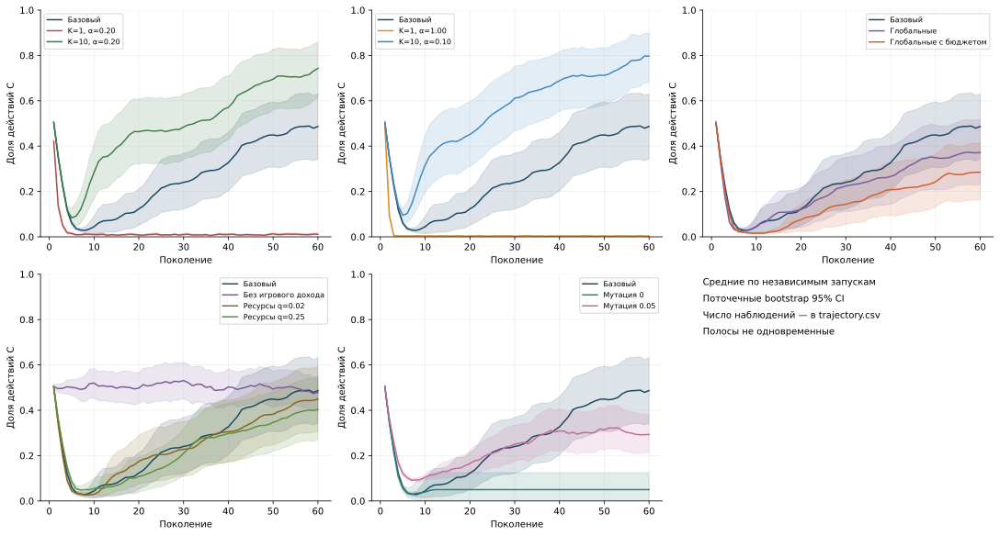
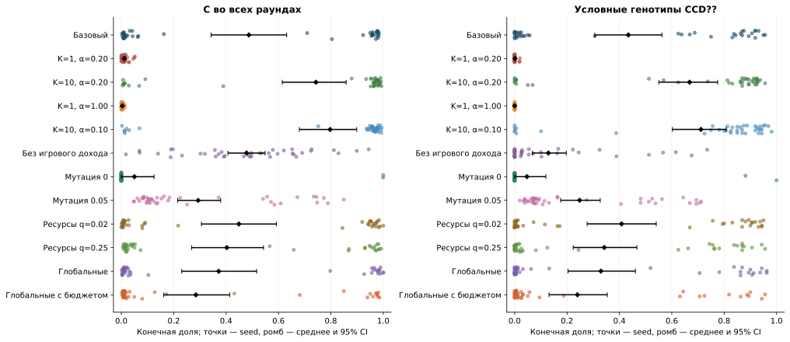
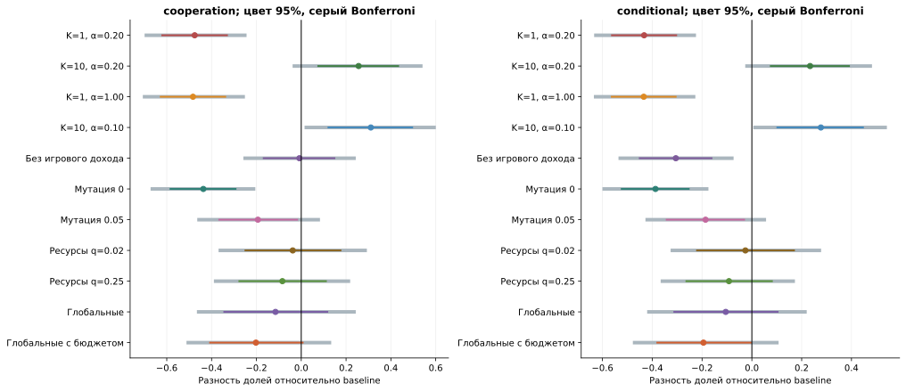
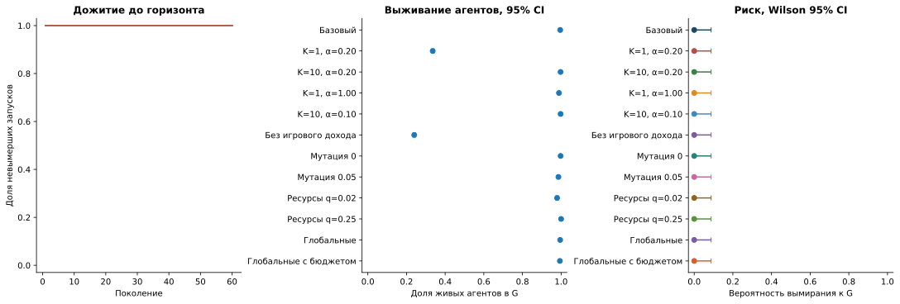
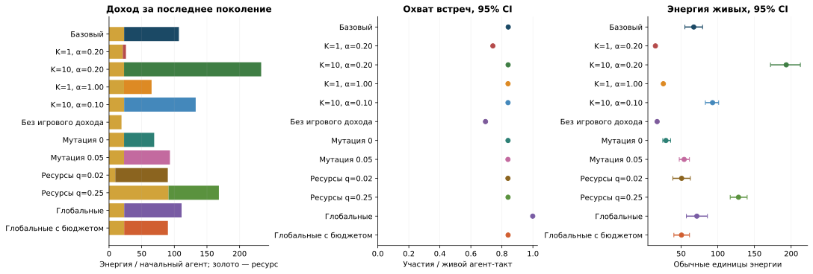
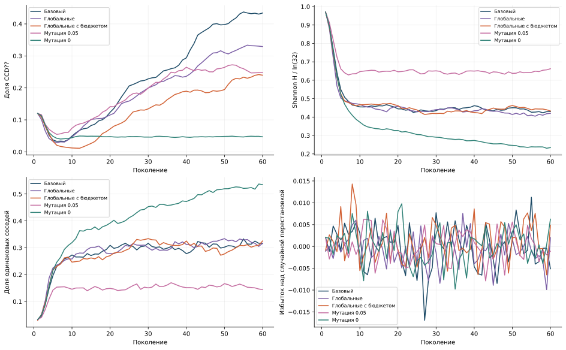
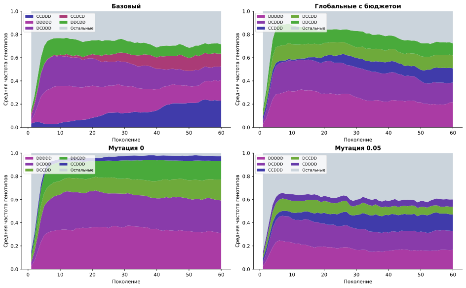
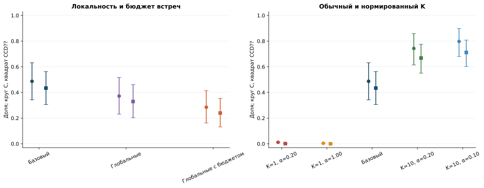
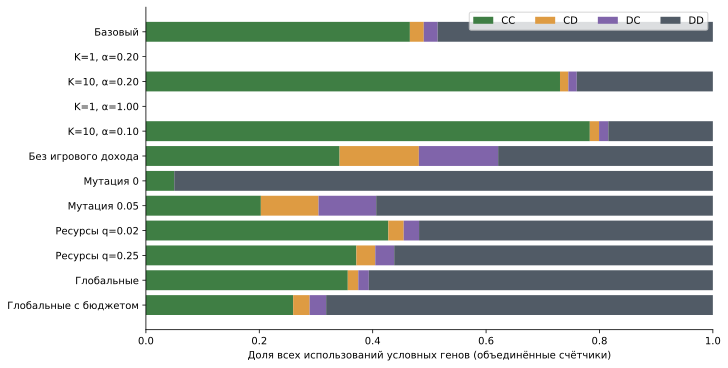
Поколения 1, 30, 60: все карты PNG/SVG. Выбор seed сделан до основной серии. Эти иллюстрации не представляют распределение всех 40 запусков.
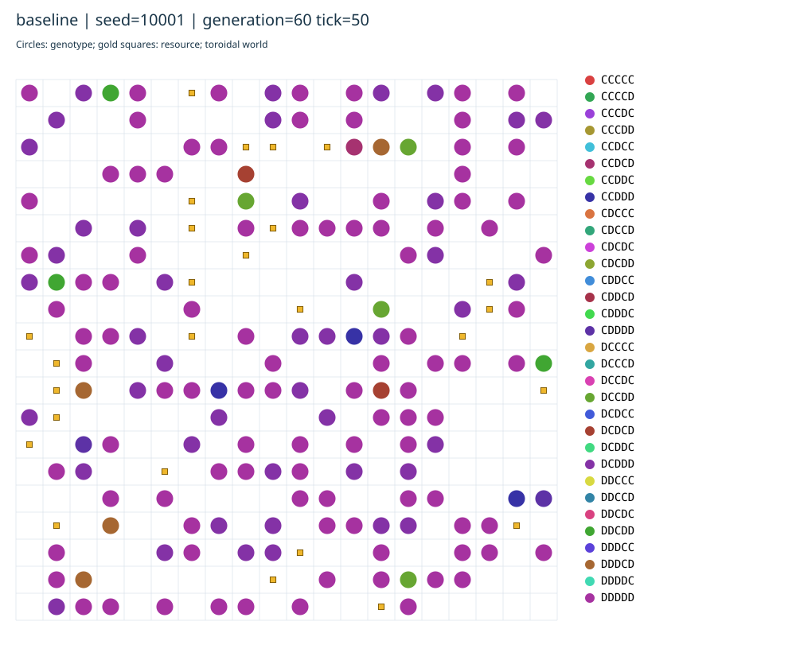
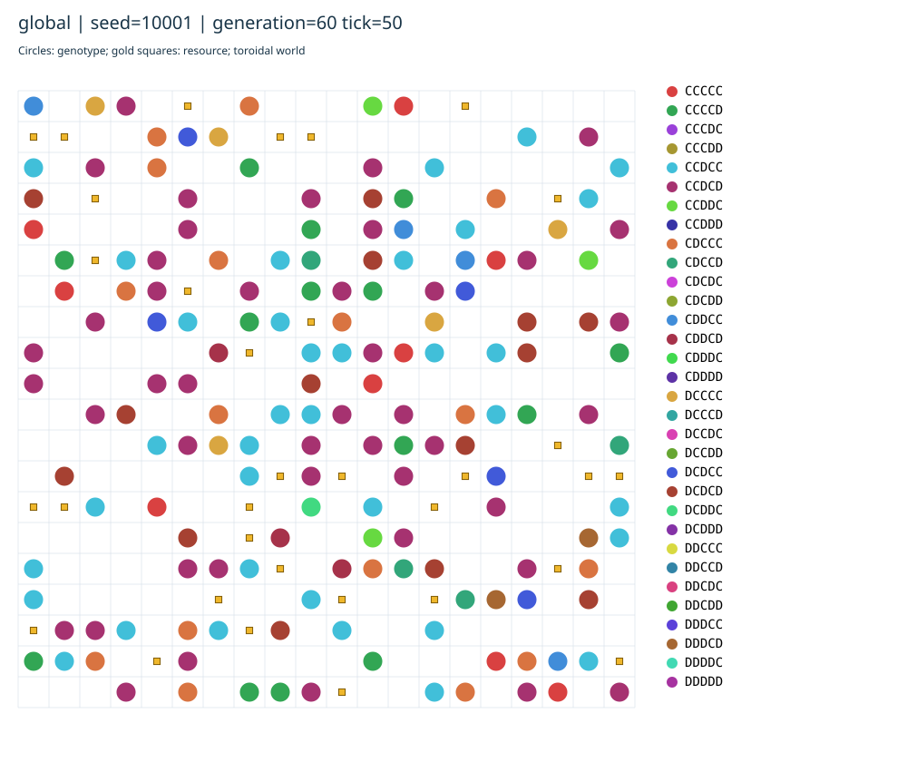
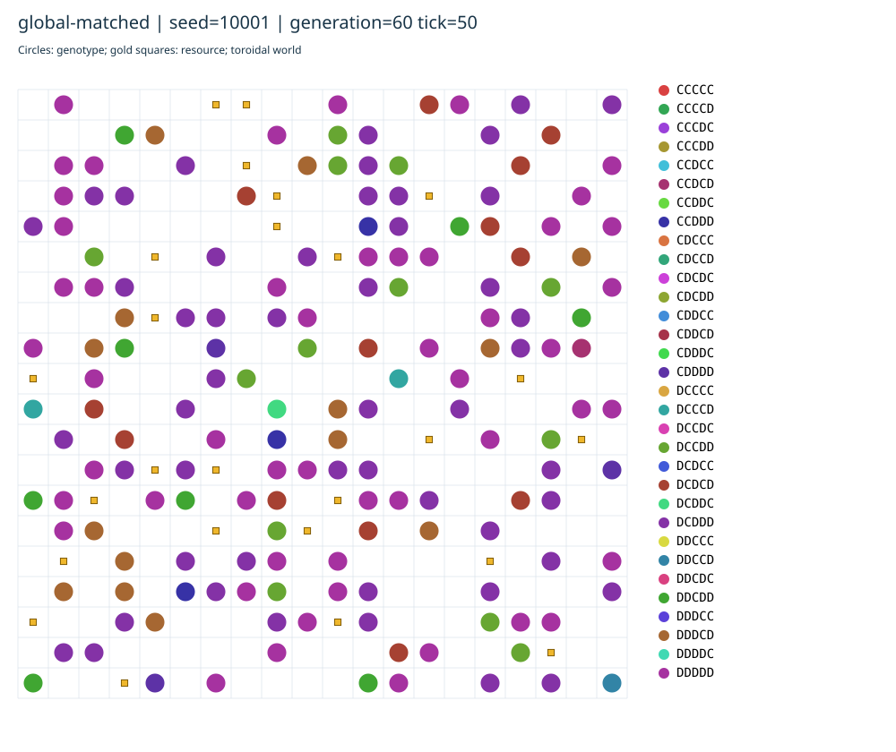
Все численные значения восстановимы из трёх входных CSV. Графики и таблицы не используют данные пилота. Полный протокол и пояснительная записка находятся в docs проекта. Карты отдельного seed — только иллюстрации; статистика выше основана на всех запусках.